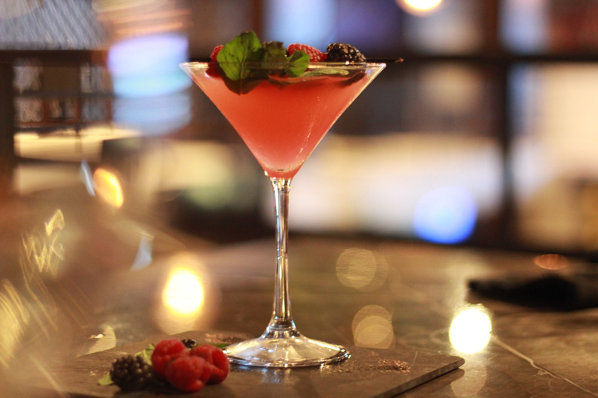

NUESTROS COCTELES
Los cócteles en un bazar-restobar son una experiencia única que combina creatividad y frescura, utilizando ingredientes locales y sabores innovadores.
Ofrecen una variedad de opciones, desde clásicos hasta mocktails, asegurando que todos los clientes puedan disfrutar. La presentación es atractiva,
con decoraciones llamativas y guarniciones frescas. Además, muchos cócteles fusionan sabores de diferentes culturas, enriqueciendo la experiencia
gastronómica y social de los visitantes, convirtiendo cada bebida en una celebración de sabores y creatividad.